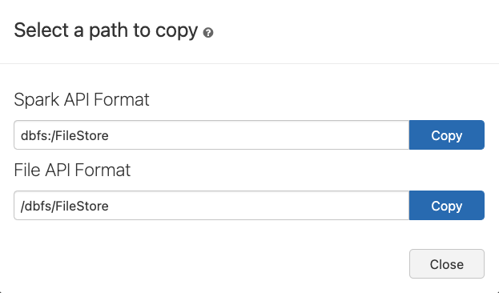
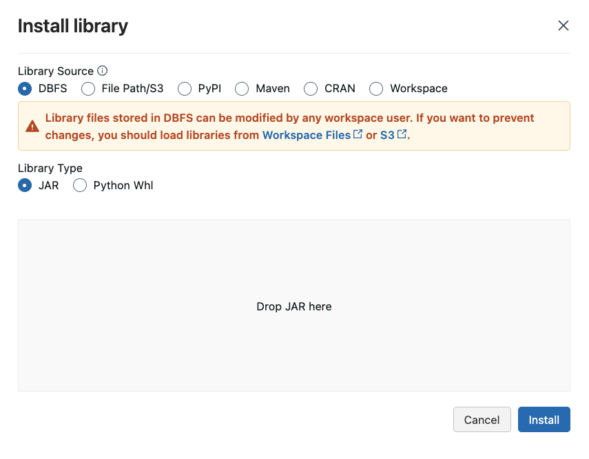
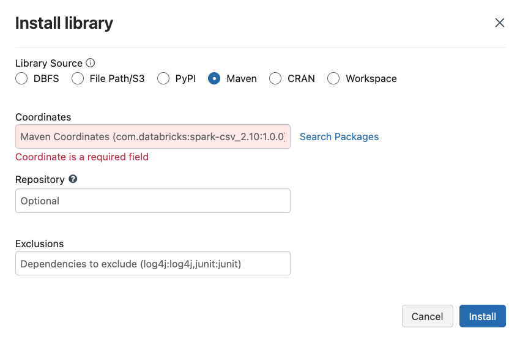
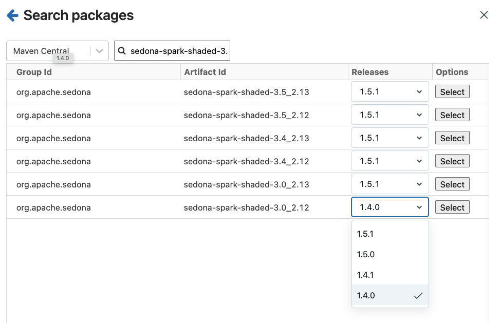
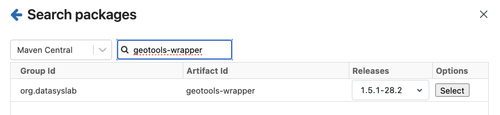
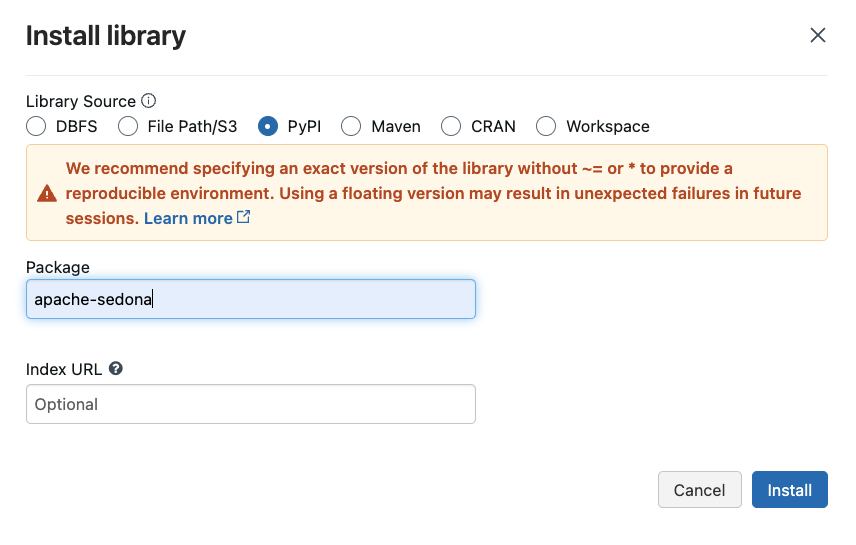
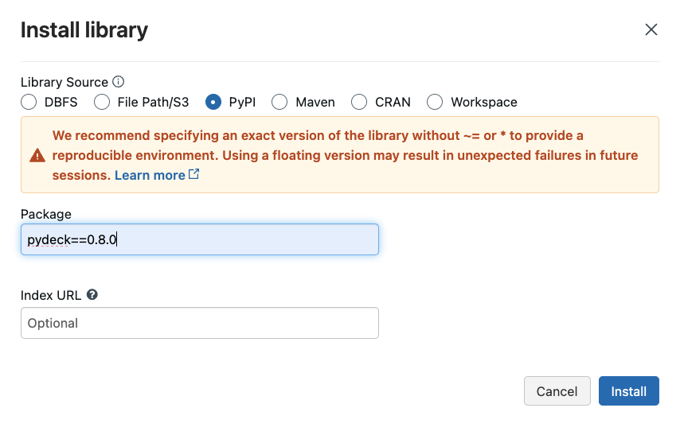
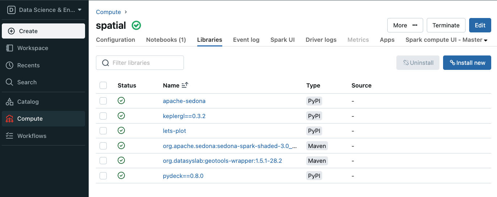

6 Databricks Community Edition
The community edition provides free access to the Databricks environment to see their vision of jupyter notebooks and to work with a Spark environment. The users do not incur any costs while using Databricks.
Read more about the limitations of Community Edition at this FAQ.
6.1 Community Edition Setup
- Create an account at Try Databricks
- After entering your name and information, find the small type link that says
Get started with Community Edition ->and click. - Login into the Databricks community edition portal
- Click the compute icon on the left ()
- Create and Name your cluster (you will have to do this every time you log in)
- Create a notebook and start exploring
6.2 What is the difference between the Databricks Community Edition and the full Databricks Platform?
With the Databricks Community Edition, the users will have access to 15GB clusters, a cluster manager, and the notebook environment to prototype simple applications, and JDBC / ODBC integrations for BI analysis. The Databricks Community Edition access is not time-limited, and users will not incur AWS costs for their cluster usage.
The full Databricks platform offers production-grade functionality, such as an unlimited number of clusters that easily scale up or down, a job launcher, collaboration, advanced security controls, and expert support. It helps users process data at scale, or build Apache Spark applications in a team setting.
6.2.1 Compute resources
The Community Edition will force you to create a new compute if your current compute resource shuts down (you cannot restart it). Cloning an old resource is available; However, any Libraries specified under the Libraries tab will not be cloned and must be respecified.
6.2.2 Local File System and DBFS
The file system is restricted differently than the professional Databricks platform. Once you have enabled DBFS browsing (click user in top right > select Admin Settings > Workspace settings tab > then enable DBFS File Browser) you can use the DBFS button that now appears after using the catalog navigation to see files stored in the Databricks File System (DBFS). You should have a FileStore folder where uploaded files will appear. After clicking the down arrow to the right of any folder or file, you can select copy path and the following popup appears.

The Spark API Format works for parsing files using the spark.read methods. The File API Format should work for packages like Pandas and Polars. However, the Community edition does not connect the dbfs drive to the main node. You will need to leverage the dbutils package in Databricks to copy the file to a local folder for Pandas and Polars to access the file.
6.3 Using Apache Sedona for Spatial SQL Methods
Apache Sedona is a cluster computing system for processing large-scale spatial data. Sedona extends Apache Spark with a set of out-of-the-box distributed Spatial Datasets and Spatial SQL that efficiently load, process, and analyze large-scale spatial data across machines.

They have an installation guide for Databricks that helps us understand the setup process so that we can leverage spatial SQL with our compute.
6.3.1 Installing Sedona libraries for Spark
Installing libraries allows us to leverage third-party or custom code in our notebooks and jobs. Python, Java, Scala, and R libraries are available through your compute page’s’ Libraries’ tab. We can upload Java, Scala, and Python libraries and point to external packages in PyPI, Maven, and CRAN repositories.

6.3.1.1 Installing the Sedona Maven Coordinates
Apache Maven provides access to a database of .jar files containing compilation instructions to upgrade your Spark environment. We can navigate to the maven installation location under libraries as shown in the picture below.

Apached Sedona requires two .jars for it to work in Databricks.
The following screen shots exemplify the installation on Community edition.


6.3.1.2 Installing the Sedona Python packages
We can install Python packages available to the entire Spark environment through the libraries page as well. We need two packages for Apache Sedona - apache-sedona, keplergl==0.3.2, pydeck==0.8.0. The following charts exemplify this installation on our Community edition.


Unfortunately, we must go through these steps each time we start a new compute on our Community edition. It takes a few minutes for all the libraries to install. Once completed, you should see the following (Note: I have installed lets-plot as well, which is unnecessary for Sedona).

6.3.2 Starting your notebook
Your notebooks will need the following code for Sedona to work correctly.
6.4 Using Databricks notebooks
- Watch this video to see a short example of using the platform
- Read about the basics of Databricks notebooks